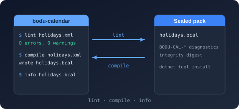

Namespace Bodu.Globalization.Calendar.Tool

Purpose
Bodu.Globalization.Calendar.Tool is the bodu-calendar command-line tool (built from a clone — it is not published to nuget.org): it validates notable-date XML / JSON documents with the stable BODU-CAL-* diagnostics (lint), compiles them to sealed .bcal binary rule packs (compile), and inspects compiled packs (info). The namespace holds the tool's in-process entry point, CalendarTool, which the console host, the Bodu.Globalization.Calendar.Build MSBuild task, and the test suite all share — so the build-time compiler and the command line are one code path.
The package is published as Preview. It depends on Bodu.Globalization.Calendar and performs every load through NotableDateResourceLoader in collect mode, resolving imports first from an optional --resolver-dir and then from the bundled CommonNotableDateResources.
Static documentation
- Calendar tooling introduction — the verbs, options, exit codes, and diagnostic line format, and the companion
Bodu.Globalization.Calendar.BuildMSBuild integration. - Binary rule packs — when to compile a pack, the format guarantees and layout, and loading packs with
LoadBinary. - Calendar validation diagnostics — every
BODU-CAL-*code the tool prints. - Globalization & Calendars topic overview — where the toolchain sits beside the runtime, its companions, and the data packs.
Key types
- CalendarTool — the static command surface.
Run(string[] args, TextWriter output, TextWriter error)dispatches thelint/compile/infoverbs (case-insensitive), writes normal output tooutputand errors plus usage help toerror, and returns the process exit code. The exit codes are exposed as constants:ExitSuccess(0),ExitFailure(1— a validation or input failure), andExitUsage(2— a usage error). Diagnostics print one per line as[Severity] CODE: message.
Example
using Bodu.Globalization.Calendar.Tool;
// Drive the tool in process — the same path the console host and the MSBuild task use.
int exitCode = CalendarTool.Run(
["compile", "rules/holidays.xml", "-o", "packs/holidays.bcal", "--resolver-dir", "rules/shared"],
Console.Out,
Console.Error);
if (exitCode != CalendarTool.ExitSuccess)
{
// ExitFailure: the document reported BODU-CAL-* errors (printed to the error writer) or the input was missing.
// ExitUsage: a bad verb, option, or extension; usage help was printed to the error writer.
Console.Error.WriteLine($"bodu-calendar exited with {exitCode}");
}
Notes
- Preview. The verb set and option names may still change between releases without a major-version bump.
- No public API beyond
Run. The tool is meant to be installed and invoked, or hosted through theBodu.Globalization.Calendar.Buildpackage; consumers who want to compile packs from code should use NotableDateDocumentBuilder.SaveBinaryor NotableDateBinaryResource.Writedirectly rather than referencing this assembly.
Classes
- CalendarTool
Implements the
bodu-calendarcommand surface —lint,compile, andinfo— as an in-process entry point the console host and the tests share.